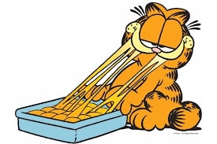
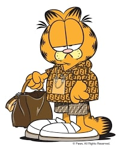

Garfield Smug
Garfield Lasagna
Garfield Drip
Garfield Slouch
Garfield Fight
Garfield Excited
Garfield is an American comic strip created by Jim Davis. Originally published locally as Jon in 1976, then in nationwide syndication from 1978 as Garfield, it chronicles the life of the title character, Garfield the cat; Jon Arbuckle, his human owner; and Odie, the dog. As of 2013, it was syndicated in roughly 2,580 newspapers and journals, and held the Guinness World Record for being the world's most widely syndicated comic strip.